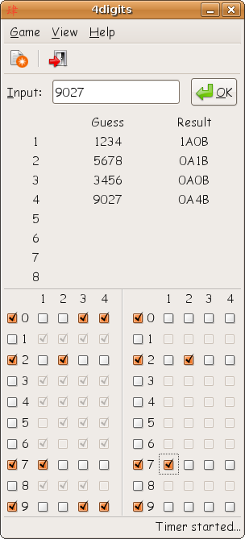

We don't have any information yet, so we start with some random numbers.
There is not much we can conclude from this. But the information that one number is at the right place will be helpful later.
This is an example how to solve your game with the hinttable.
|
We don't have any information yet, so we start with some random numbers. There is not much we can conclude from this. But the information that one number is at the right place will be helpful later. |
|
So let's try some more random numbers, but different ones than in the first try. Now this gives us some real hints.
| 
|
 | This is how your screen should look now. |
|
Now we try to gather some more information about the numbers 1 to 9. I tried 3456 and the answer was 0A0B. So we can be sure that none of these digits is valid! | 
|
 |
Next I tried 9027 and got 0A4B. So we have found all valid digits! Mark them in both tables. |
|
As in step 2 we can again exclude some places for the valid digits and mark them in the first table:
I also tried 9072 which gave me the hint that 2 is not at the last place. |  |

| Now we have the situation that both 2 and 7 can only go to places 1 and 2. This implies that no other digit can go to these places. So we can exclude the digit 9 from place 2. |
|
Now we use the information we got in step 1
The first result was that there is one digit in the right place. Obviously this can only be the 2.
Now the 2 can't go to place 1 (because it's already at place 2 and no duplicates are allowed). Therefore 7 must go to place 1. | 
|

| Only two possible solutions left: 7209 and 7290. I choose 7209... ...and win! |
Written by Hermann Kraus.

This work is licenced under a
Creative Commons Licence.